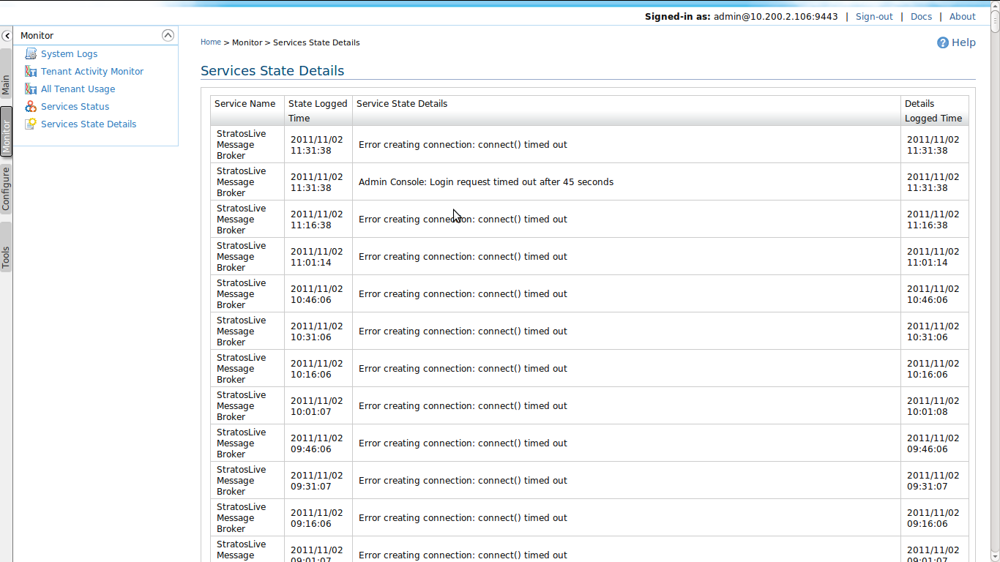

In this page, you can see the status of the services. A service instance can be 'Up & Running', 'Broken', 'Down', and 'Resolved'.
This page lists the service status logs. Hence, here you can view the details behind the service status. 